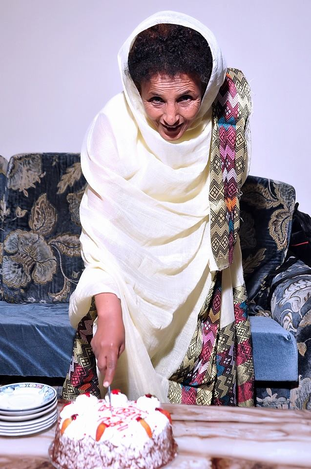

Zemebework Haile
The Women Who gave it all

Zenebework was a women dedicated to her family more than all
Here is a timeline of Zenebework's life:
- 1958 - Born in Wichale, Amhara Region.
- 1966 - Started school at Weyzero Sihine Primary school.
- 1978 - Finished her secondary school.
- 1979 - Came to Addis Ababa and got married to Mr. Belayneh Araya. She gave birth to her first son the next year.
- 1984 - Started teaching in Yeweket Fana primary school, starting a career that lasted for the next 26 years.
- Until 2020 - Raised a family participated in different social and charity activities.